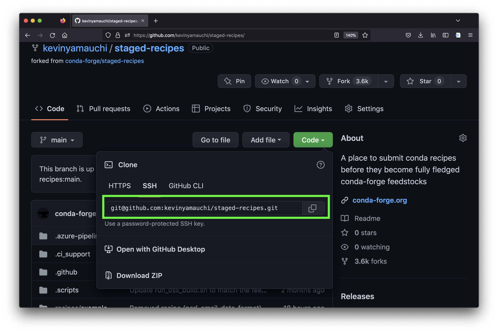

Making your package available on conda-forge#
Overview#
This how-to teaches how to make your pypi package installable with conda via conda-forge. Distributing via conda-forge is useful as many people manage their python environments via conda. The method here is the most simple method I am aware of to make your package available via conda-forge. Packages with complicated or platform-specific dependencies will require some additional steps. For more in-depth information and a deeper dive, see the “Related reading” section below.
Prerequisites
You have a package available on pypi that you want to make available via
conda-forge.You have a github account.
You know how to clone and push repositories with git.
You have conda installed on your computer.
Related reading
Instructions#
Fork the conda-forge
staged-recipeslibrary. Forking is the process of making a copy of a repository in your own account. We will make our new recipe to build our package on conda in this repository. We fork the repository instead of making the changes directly on the officialconda-forgerecipe to avoid cluttering the official repository.Log into your github account.
Navigate your web browser to the
staged-recipesrepository.Click the “fork” button to begin the forking process.
Clone your fork of the
staged-recipesto your computer. Click the green “Code” button on the repository and copy thegit@...address. Then use thegit clonecommand to clone the repository to the directory of your choosing.git clone <repo git address>
Create a conda environment to install
grayskull, the utility for generating your conda build recipe. In your terminal, create a new environment called “grayskull”conda create -n grayskull
After the environment creation finishes, activate your new “grayskull” environment.
conda activate grayskull
Install
grayskullfrom theconda-forgechannel.conda install -c conda-forge grayskull
Navigate to the
recipesdirectory of yourstaged-recipesfork that you cloned.cd path/to/staged-recipes/recipes
Use grayskull to generate the recipe from your pypi python package. Enter the command below in your terminal, replacing
<pypi package name>with the name of your package (i.e., the name you use when you dopip install <pypi package name>).grayskull pypi --strict-conda-forge <pypi package name>
Upon completion, a folder with the name of your package will be generated. Within that folder, there will be a
meta.yamlfile containing your conda recipe. For more information on themeta.yamlfile, see theconda-builddocs. As an example, see themeta.yamlfrom napari-threedee below{% set name = "napari-threedee" %} {% set version = "0.0.1" %} package: name: {{ name|lower }} version: {{ version }} source: url: https://pypi.io/packages/source/{{ name[0] }}/{{ name }}/napari-threedee-{{ version }}.tar.gz sha256: 7b468a891d5581f3c2446cfd05a58d62812e817aaa2b01b73f242449126ea5fd build: noarch: python script: {{ PYTHON }} -m pip install . -vv number: 0 requirements: host: - python >=3.8 - setuptools-scm - pip run: - python >=3.8 - npe2 - napari - numpy - qtpy test: imports: - napari_threedee commands: - pip check requires: - pip about: home: https://github.com/alisterburt/napari-threedee summary: A suite of useful tools based on 3D interactivity in napari license: BSD-3-Clause license_file: LICENSE extra: recipe-maintainers: - kevinyamauchi - alisterburtIf you are satisfied with the recipe (generally this works for packages with out complicated-to-install dependencies (e.g., pytorch), you can now commit the change. The instructions below are assuming the package name is
napari-threedee. Replacenapari-threedeewith the name of your package.# create a new branch git checkout -b add-napari-threedee # add the meta.yaml file git add napari-threedee/meta.yaml # commit the new file git commit -m "add the recipe for napari-threedee" # push the changes (change add-napari-threedee to your branch name) git push --set-upstream origin add-napari-threedee
Now you will create a pull request on the conda-forge/staged-recipes repo so that your new recipe can be reviewed. Navigate to the
conda-forge/staged-recipesrepo with your web browser. Since you just pushed a new branch to your fork, you should see a button to open a new pull request. Open the pull request once you have read the instructions in the template.The pull request will perform automatic tests. You can view them at the bottom of your pull request (screenshot below). Once they have all passed (all green checkmarks), you can request review from the team by making a comment on your pull request with the following message:
This is ready for review @conda-forge-admin, please ping teamThe
conda-forgeteam will then review your new recipe. Once they approve, you are done! Congratulations!
{kind=link}
{kind=link}
{kind=link}
{kind=link}